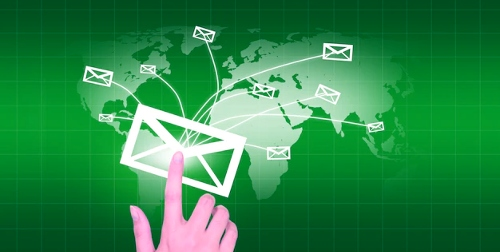
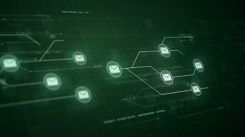

Why You Need To Authenticate Your Emails With DKIM
DKIM was developed by Yahoo! in 2004 and later adopted by the Internet Engineering Task Force (IETF) as a standard in 2007. It is now used by many email providers, including Gmail, Outlook, and AOL.
When an email is sent, the sending server signs the message with a digital signature. The signature is then verified by the receiving server. If the signature is valid, the email is considered to be from the claimed sender.
DKIM can help to prevent email spoofing and phishing attacks, as well as protect the sender's reputation.
What is DKIM?
Domain Keys Identified Mail (DKIM) is an email security standard that ensures messages are not altered during transit between the addresses from which they are sent and the addresses to which they are sent.
DKIM facilitates organizations in ensuring that they are able to deliver pieces of communication in a way the recipients can verify. The organization in question might possibly be a source, an intermediary, or the individual dropping what appeared to be the message. The DKIM reputation is used to gauge whether to trust the message.

What is a DKIM Signature?
To the top of an email, DKIM adds a signature header with an encrypted code. Each DKIM signature includes the identifying details of the message described in an encrypted phrase, and a DKIM key ensures the whole code.
The originating email server has the "private DKIM key," which can be verified by the receiving mail server or ISP with the other half of the keypair, called the "public DKIM key."
These signatures synchronize directly with the emails, and this synchronization is verified by the email servers that send the emails to their destination.
Why should you authenticate emails with DKIM?
DKIM is one of the main requisite authentication procedures, and that's because it's taken into account for deliverability as well as reputation of the domain.
Some of the main reasons for getting your domain name DKIM authenticated are the following.
1. Maintains the legitimacy of the sender
Having a DKIM signed email gives your ISPs the indication that your email has not been interfered with. This assists your reputation by appearing genuine to the recipient's server.
The more reputable your sender's reputation, the more likely it is going to end up in the inbox of the recipient, increasing your deliverability.
2. Protect your domain and secure your email
DKIM helps you from sending emails that are spoofed from your domain. It ensures that the email content was not altered when DKIM authenticates your messages. For this reason, do not send emails from spoofed domains.

3. Get in the good books of ISPs
It's common for ISPs to be considered a major player in determining the best place hosting your electronic messages. Signing your emails with DKIM is one of the most effective ways to affirm you're a legitimate sender and prevent the content from being altered.
As soon as ISPs observe that your shared IP address and domain match the majority of the senders, the more often your emails land in the targeted inbox.
How does DKIM work?
DKIM is appended to your email's header as a signature once it has been approved by both the sender and recipient's server.
The signature is validated with a public/private key that's either hosted on your server or your ISP. It is private to you, so only you can access it.
ISPs commonly review the DKIM signature on your DNS record to check if it matches the domain name of the sender. This signature is publicly available, perpetuating the publicness of your sender's domain.
In summary, DKIM is a way to verify the identity of the sender of an email. With DKIM, the signature is added to the email header as a header field. The signature indicates to the receiver of an email that the message is genuine. This prevents any message modification between the sender and the receiver. The result is a better level of trust in the message. The receiver of the email can verify the identity of the sender using the public key in the DKIM header.